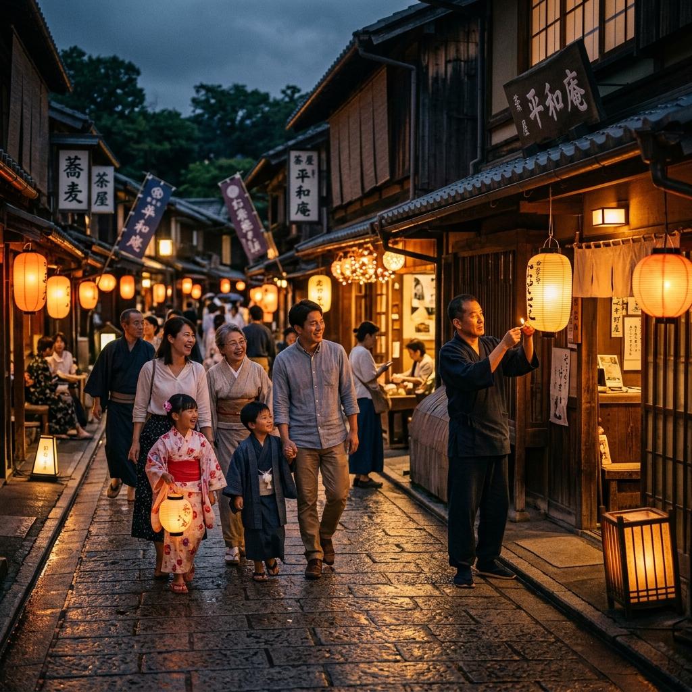
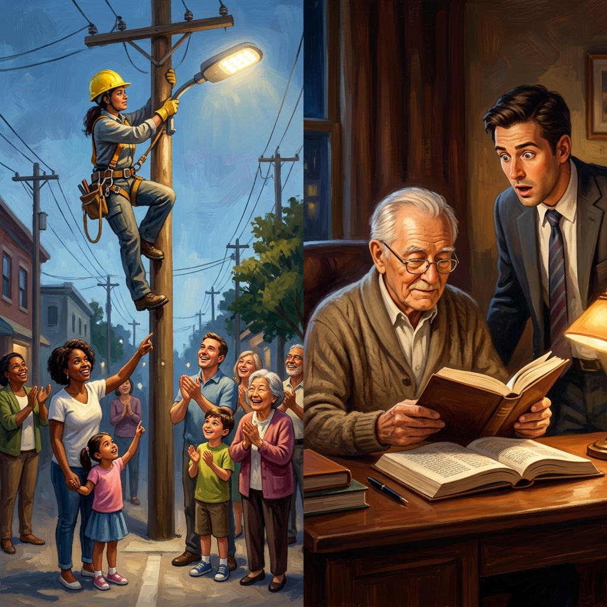
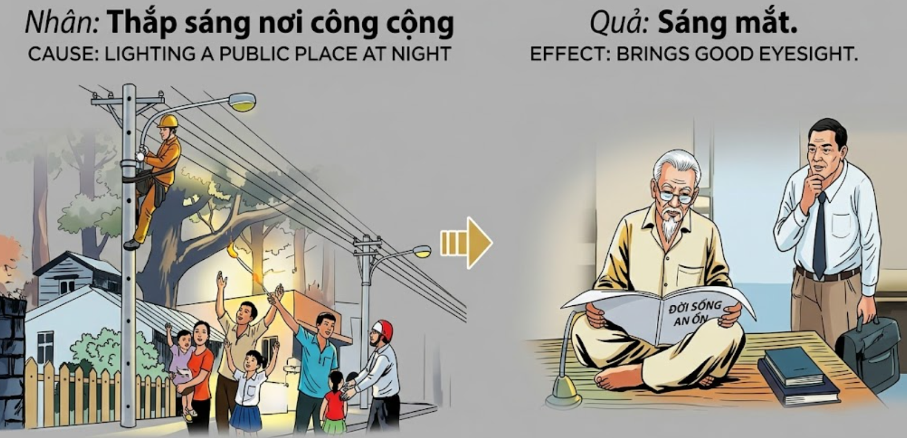

La Luz que Guía a OtrosThe Light that Guides OthersLa Luce que Guida gli Altri引导他人的光النور الذي يهدي الآخرينСвет, направляющий другихDas Licht, das andere führtLa lumière qui guide les autres他者を導く光A Luz que Guia os OutrosÁnh Sáng Khai Tâm
Quien se preocupa por iluminar los caminos oscuros donde transita el prójimo, cultiva para sí mismo la claridad del espíritu y la bendición de una vista aguda que no se apaga con los años.He who cares to illuminate the dark paths where others travel, cultivates for himself the clarity of spirit and the blessing of an acute eyesight that does not fade with the years.Chi si preoccupa di illuminare i sentieri oscuri dove gli altri viaggiano, coltiva per sé la chiarezza dello spirito e la benedizione di una vista acuta que non svanisce con gli anni.关怀并照亮他人行走的黑暗道路者，是在为自己培育心灵的明晰，并获得世世不衰的敏锐视力之福报。من يهتم بإنارة الطرق المظلمة التي يسلكها الآخرون، يزرع لنفسه وضوح الروح وبركة البصر الحاد الذي لا يخبو بمرور السنين.Тот, кто заботится об освещении темных путей, по которым ходят другие, взращивает в себе ясность духа и благословение острого зрения, которое не угасает с годами.Wer sich darum kümmert, die dunklen Pfade zu erhellen, auf denen andere wandeln, kultiviert für sich selbst die Klarheit des Geistes und den Segen einer scharfen Sehkraft, die mit den Jahren nicht nachlässt.Celui qui se soucie d'éclairer les chemins sombres où voyagent les autres cultive pour lui-même la clarté d'esprit et la bénédiction d'une vue perçante qui ne faiblit pas avec les années.他人が通る暗い道を照らそうと配慮する者は、自らのために精神の明晰さと、歳月を経ても衰えることのない鋭い视力の祝福を育んでいます。Aquele que se preocupa em iluminar os caminhos escuros por onde outros transitam, cultiva para si a clareza de espírito e a bênção de uma vista aguda que não se apaga com os anos.Kẻ nào quan tâm đến việc thắp sáng những nẻo đường tăm tối nơi người khác qua lại, kẻ đó đang tự bồi đắp cho mình sự sáng suốt của tâm hồn và phúc báo về một đôi mắt tinh anh không hề mờ đục theo năm tháng.
La oscuridad no es solo la ausencia de luz física, sino un velo que esconde peligros y genera temor. En el tejido del karma, el acto de proporcionar luz en lugares públicos —ya sea instalando lámparas, manteniendo encendidos los faroles o simplemente despejando el camino del prójimo— es una forma elevada de generosidad que protege la integridad de la comunidad.
Cada destello que ayuda a un caminante a no tropezar o a una madre a encontrar el camino a casa es una semilla de mérito depositada en la propia conciencia. El universo, en su infinita justicia, recompensa a quienes combaten las sombras otorgándoles una visión clara, tanto en el sentido biológico como en el espiritual. Aquel que ilumina el mundo exterior, termina por ver el mundo interior con una nitidez asombrosa.
La vejez suele traer consigo la niebla en los ojos, pero para quienes han sido portadores de luz, este proceso se ralentiza o se invierte. Sus ojos conservan el brillo de la juventud porque han valorado la luz como un bien compartido. Más allá de la visión física, estas almas adquieren la capacidad de discernir la verdad entre las mentiras, viendo caminos donde otros solo ven abismos.
Darkness is not just the absence of physical light, but a veil that hides dangers and generates fear. In the fabric of karma, the act of providing light in public places—whether by installing lamps, keeping lanterns lit, or simply clearing the neighbor's path—is a high form of generosity that protects the integrity of the community.
Every flash that helps a traveler not to stumble or a mother to find the way home is a seed of merit deposited in one's own consciousness. The universe, in its infinite justice, rewards those who fight shadows by granting them a clear vision, both in the biological and spiritual senses. He who illuminates the outer world ends up seeing the inner world with amazing clarity.
Old age usually brings with it the fog in the eyes, but for those who have been bearers of light, this process slows down or reverses. Their eyes retain the brightness of youth because they have valued light as a shared good. Beyond physical vision, these souls acquire the ability to discern the truth among lies, seeing paths where others see only abysses.
L'oscurità non è solo l'assenza di luce fisica, ma un velo que nasconde pericoli e genera timore. Nella trama del karma, l'atto di fornire luce nei luoghi pubblici — que si tratti di installare lampade, mantenere accese le lanterne o semplicemente liberare il cammino del prossimo — è una forma elevata di generosità que protegge l'integrità della comunità.
Ogni barlume que aiuta un viandante a non incespicare o una madre a trovare la via di casa è un seme di merito depositato nella propria coscienza. L'universo, nella sua infinita giustizia, ricompensa coloro que combattono le ombre garantendo loro una visione chiara, sia in senso biologico que spirituale. Colui que illumina il mondo esterno finisce per vedere il mondo interiore con una nitidezza sorprendente.
La vecchiaia di solito porta con sé la nebbia negli occhi, ma per coloro que sono stati portatori di luce, questo processo rallenta o si inverte. I loro occhi conservano la brillantezza della giovinezza perché hanno valorizzato la luce come un bene condiviso. Oltre la visione fisica, queste anime acquisiscono la capacità di discernere la verità tra le bugie, vedendo sentieri dove gli altri vedono solo abissi.
黑暗不仅仅是物理光线的缺乏，更是一层遮掩危险、产生恐惧的遮羞布。在业力的织锦中，在公共场所提供照明的行为——无论是安装路灯、保持灯笼点亮，还是仅仅清理邻里的道路——都是一种保护社区完整性的崇高慷慨形式。
每一个帮助旅行者不被绊倒或帮助母亲找到回家路的闪光，都是存入自身意识中的功德种子。宇宙在它无限的正义中，通过赋予战斗阴影的人们清晰的愿景（无论是生物意义上的还是精神意义上的）来奖励他们。照亮外部世界的人，最终会以非凡的清晰度看清内心世界。
晚年通常会带来眼前的迷雾，但对于那些光明的传播者来说，这个过程会减慢或逆转。他们的眼睛保持着青春的光彩，因为他们将光明视为共享的财富。除了物理视觉之外，这些灵魂还获得了在谎言中辨别真相的能力，在他人只看到深渊的地方看到道路。
الظلام ليس مجرد غياب للضوء المادي، بل هو حجاب يخفي الأخطار ويولد الخوف. في نسيج الكارما، يعد توفير الضوء في الأماكن العامة - سواء عن طريق تركيب المصابيح، أو الحفاظ على إنارة الفوانيس، أو ببساطة تمهيد طريق الجار - شكلاً سامياً من أشكال الكرم الذي يحمي سلامة المجتمع.
كل وميض يساعد مسافراً على عدم التعثر أو أماً في العثور على طريق العودة إلى المنزل هو بذرة فضل تودع في وعي المرء. الكون، في عدله اللامحدود، يكافئ أولئك الذين يحاربون الظلال بمنحهم رؤية واضحة، بالمعنيين البيولوجي والروحي. من يضيء العالم الخارجي ينتهي به الأمر برؤية العالم الداخلي بوضوح مذهل.
وعادة ما تجلب الشيخوخة معها ضباباً في العيون، ولكن بالنسبة لأولئك الذين كانوا حاملين للنور، فإن هذه العملية تتباطأ أو تنعكس. تحتفظ عيونهم ببريق الشباب لأنهم قدروا النور كخير مشترك. بعيداً عن الرؤية المادية، تكتسب هذه الأرواح القدرة على تمييز الحقيقة وسط الأكاذيب، ورؤية الطرق حيث لا يرى الآخرون سوى الهاوية.
Тьма — это не просто отсутствие физического света, это завеса, которая скрывает опасности и порождает страх. В полотне кармы акт освещения общественных мест — будь то установка ламп, поддержание света в фонарях или просто расчистка пути для ближнего — является высшей формой щедрости, защищающей целостность общества.
Каждая вспышка света, помогающая путнику не споткнуться или матери найти дорогу домой, — это семя заслуг, заложенное в собственное сознание. Вселенная в своей бесконечной справедливости вознаграждает тех, кто борется с тенями, даруя им ясное видение как в биологическом, так и в духовном смысле. Тот, кто освещает внешний мир, в итоге начинает видеть внутренний мир с поразительной четкостью.
Старость обычно приносит с собой туман в глазах, но для тех, кто был носителем света, этот процесс замедляется или обращается вспять. Их глаза сохраняют блеск юности, потому что они ценили свет как общее благо. Помимо физического зрения, эти души обретают способность отличать истину от лжи, видя пути там, где другие видят только бездны.
Dunkelheit ist nicht nur die Abwesenheit von physischem Licht, sondern ein Schleier, der Gefahren verbirgt und Angst erzeugt. Im Gewebe des Karmas ist der Akt, in öffentlichen Räumen Licht zu spenden – sei es durch die Installation von Lampen, das Brennenlassen von Laternen oder das einfache Freimachen des Weges für den Nächsten – eine hohe Form der Großzügigkeit, die die Integrität der Gemeinschaft schützt.
Jeder Lichtblick, der einem Wanderer hilft, nicht zu stolpern, oder einer Mutter, den Heimweg zu finden, ist ein Same des Verdienstes, der im eigenen Bewusstsein hinterlegt wird. Das Universum belohnt in seiner unendlichen Gerechtigkeit diejenigen, die Schatten bekämpfen, indem es ihnen eine klare Sicht gewährt, sowohl im biologischen als auch im spirituellen Sinne. Wer die Außenwelt erhellt, sieht die Innenwelt am Ende mit erstaunlicher Klarheit.
Das Alter bringt normalerweise Nebel in den Augen mit sich, aber für diejenigen, die Lichtträger waren, verlangsamt sich dieser Prozess oder kehrt sich um. Ihre Augen behalten den Glanz der Jugend, weil sie Licht als gemeinsames Gut geschätzt haben. Über das physische Sehvermögen hinaus erlangen diese Seelen die Fähigkeit, die Wahrheit unter Lügen zu erkennen und Wege zu sehen, wo andere nur Abgründe sehen.
L'obscurité n'est pas seulement l'absence de lumière physique, mais un voile qui cache les dangers et génère la peur. Dans la trame du karma, l'acte de fournir de la lumière dans les lieux publics — que ce soit en installant des lampes, en maintenant les lanternes allumées ou simplement en dégageant le chemin du prochain — est une forme élevée de générosité qui protège l'intégrité de la communauté.
Chaque lueur qui aide un voyageur à ne pas trébucher ou une mère à trouver le chemin de la maison est une graine de mérite déposée dans sa propre conscience. L'univers, dans son infinie justice, récompense ceux qui combattent les ombres en leur accordant une vision claire, tant au sens biologique qu'au sens spirituel. Celui qui illumine le monde extérieur finit par voir le monde intérieur avec une clarté étonnante.
La vieillesse apporte généralement avec elle le brouillard dans les yeux, mais pour ceux qui ont été porteurs de lumière, ce processus ralentit ou s'inverse. Leurs yeux conservent l'éclat de la jeunesse parce qu'ils ont valorisé la lumière comme un bien partagé. Au-delà de la vision physique, ces âmes acquièrent la capacité de discerner la vérité parmi les mensonges, voyant des chemins là où les autres ne voient que des abîmes.
暗闇は単に物理的な光の不在ではなく、危険を隠し、恐怖を生み出すベールです。カルマの織りなす糸において、公共の場所に光を提供すること。例えばランプを設置したり、提灯を灯し続けたり、隣人の道を整えたりする行為は、コミュニティの健全さを守る崇高な寛大さの一形態です。
旅人がつまずかないように、あるいは母親が家への道を見つけられるように助ける一筋の光は、自らの意識に蓄積される功徳の象徴です。宇宙はその無限の正義により、影と戦う者たちに生物学的、精神的両方の意味で澄み切った視力を与えることで報います。外の世界を照らす者は、最終的に自分の内面の世界を驚くほどの明晰さで見ることができるようになります。
老いは通常、目に霧をもたらしますが、光の運び手であった人々にとって、このプロセスは遅くなるか、あるいは逆転します。光を共有された善として重んじてきたため、彼らの目は若々しい輝きを保つのです。身体的な視力を超えて、これらの魂は嘘の中から真実を見分ける能力を獲得し、他の人が深淵しか見えない場所に道を見出すようになります。
A escuridão não é apenas a ausência de luz física, mas um véu que esconde perigos e gera temor. No tecido do karma, o acto de proporcionar luz em locais públicos — seja instalando lâmpadas, mantendo acesos os candeeiros ou simplesmente desimpedindo o caminho do próximo — é uma forma elevada de generosidade que protege a integridade da comunidade.
Cada lampejo que ajuda um caminhante a não tropeçar ou uma mãe a encontrar o caminho para casa é uma semente de mérito depositada na própria consciência. O universo, na sua infinita justiça, recompensa quem combate as sombras outorgando-lhes uma visão clara, tanto no sentido biológico como no espiritual. Aquele que ilumina o mundo exterior, acaba por ver o mundo interior con uma nitidez assombrosa.
A velhice costuma trazer consigo a névoa nos olhos, pero para quem foi portador de luz, este processo abranda ou inverte-se. Os seus olhos conservam o brilho da juventude porque valorizaron a luz como um bem partilhado. Para além da visão física, estas almas adquirem a capacidade de discernir a verdade entre as mentiras, vendo caminhos onde outros apenas vêem abismos.
Bóng tối không chỉ là sự thiếu vắng ánh sáng vật lý, mà còn là một bức màn che giấu những hiểm nguy và nảy sinh nỗi sợ hãi. Trong mạng lưới nhân quả, hành động thắp sáng những nơi công cộng — dù là lắp đặt đèn đường, duy trì ngọn lửa trong những chiếc lồng đèn hay đơn giản là dọn dẹp lối đi cho người sau — là một hình thức hào phóng cao đẹp, bảo vệ sự an toàn cho cả cộng đồng.
Mỗi tia sáng giúp một lữ khách khỏi vấp ngã hoặc một người mẹ tìm thấy đường về nhà là một hạt giống phúc đức được gửi gắm vào tâm thức chính mình. Vũ trụ, với sự công bằng vô hạn, sẽ đền đáp những ai chống lại bóng tối bằng cách ban cho họ một đôi mắt tinh anh, cả về mặt sinh học lẫn tâm linh. Kẻ thắp sáng thế giới bên ngoài sẽ kết thúc bằng việc nhìn thấu thế giới nội tâm với một sự rõ ràng đáng kinh ngạc.
Tuổi già thường mang theo lớp sương mờ trong đôi mắt, nhưng đối với những người từng là sứ giả của ánh sáng, quá trình này sẽ chậm lại hoặc bị đảo ngược. Đôi mắt họ giữ được vẻ rạng rỡ của tuổi trẻ vì họ luôn trân trọng ánh sáng như một tài sản chung của nhân loại. Vượt xa khỏi thị lực vật lý, những tâm hồn này có khả năng phân biệt chân lý giữa những lời giả dối, nhìn thấy con đường ở những nơi mà kẻ khác chỉ thấy vực thẳm.
El Portador de la Llama de Hue
The Flame Bearer of Hue
Il Portatore della Fiamma di Hue
顺化的火炬手
حامل الشعلة في هوي
Носитель огня из Хюэ
Der Flammenträger von Hue
Le porteur de flamme de Hue
フエの炎の運び手
O Portador da Chama de Hue
Người Giữ Lửa Của Cố Đô
En la antigua ciudad de Hue, un hombre llamado Tinh dedicaba sus noches a una tarea peculiar. Mientras otros dormían, él recorría los callejones más oscuros y peligrosos colocando pequeñas lámparas de aceite que él mismo costeaba. Cuando le preguntaban por qué gastaba su jornal en iluminar el camino de extraños que nunca le darían las gracias, él simplemente sonreía y decía: 'La luz no es mía, es de quien la necesita'.
Pasaron los años y Tinh llegó a una edad avanzada. En un festival de lectura de manuscritos antiguos, un joven académico se lamentaba de que la letra era demasiado pequeña y la luz insuficiente. Tinh se acercó y, para asombro de todos, comenzó a leer los pasajes más complejos con una fluidez y precisión absolutas, sin necesidad de lentes ni esfuerzo. Sus ojos parecían tener una luz propia que atravesaba el desgaste del tiempo.
Un médico que estaba presente le examinó los ojos y dijo: 'Nunca he visto una retina tan clara en alguien de su edad'. Tinh recordó entonces aquellas noches solitarias alimentando las lámparas en los callejones. Comprendió que al dar luz a los pies de los demás, el karma había mantenido encendido el sol en sus propios ojos. Tinh no solo veía las palabras en el papel, sino que veía la luz en el corazón de las personas, un don que solo se otorga a quienes se negaron a dejar el mundo en tinieblas.
In the ancient city of Hue, a man named Tinh dedicated his nights to a peculiar task. While others slept, he traveled through the darkest and most dangerous alleys placing small oil lamps that he himself paid for. When asked why he spent his wages illuminating the path of strangers who would never thank him, he simply smiled and said: 'The light is not mine, it belongs to those who need it.'
Years passed and Tinh reached an advanced age. At a festival for reading ancient manuscripts, a young scholar lamented that the print was too small and the light insufficient. Tinh approached and, to everyone's amazement, began to read the most complex passages with absolute fluency and precision, without the need for glasses or effort. His eyes seemed to have a light of their own that pierced through the wear and tear of time.
A doctor who was present examined his eyes and said: 'I have never seen such a clear retina in someone your age.' Tinh then remembered those lonely nights feeding the lamps in the alleys. He understood that by giving light to the feet of others, karma had kept the sun burning in his own eyes. Tinh not only saw the words on the paper, but he saw the light in the hearts of people, a gift only granted to those who refused to leave the world in darkness.
Nell'antica città di Hue, un uomo di nome Tinh dedicava le sue notti a un compito particolare. Mentre gli altri dormivano, percorreva i vicoli più bui e pericolosi posizionando piccole lampade ad olio que pagava lui stesso. Quando gli veniva chiesto perché spendesse il suo salario per illuminare il cammino di sconosciuti que non lo avrebbero mai ringraziato, semplicemente sorrideva e diceva: 'La luce non è mia, appartiene a chi ne ha bisogno'.
Passarono gli anni e Tinh raggiunse un'età avanzata. Durante un festival di lettura di antichi manoscritti, un giovane studioso si lamentava que il carattere fosse troppo piccolo e la luce insufficiente. Tinh si avvicinò e, con stupore di tutti, iniziò a leggere i passaggi più complessi con assoluta fluidità e precisione, senza bisogno di occhiali o sforzo. I suoi occhi sembravano avere una luce propria que squarciava i segni del tempo.
Un medico que era presente gli esaminò gli occhi e disse: 'Non ho mai visto una retina così chiara in una persona della sua età'. Tinh ricordò allora quelle notti solitarie ad alimentare le lampade nei vicoli. Capì que dando luce ai piedi degli altri, il karma aveva mantenuto acceso il sole nei suoi stessi occhi. Tinh non solo vedeva le parole sulla carta, ma vedeva la luce nel cuore delle persone, un dono concesso solo a coloro que si sono rifiutati di lasciare il mondo nelle tenebre.
在古城顺化，一个名叫 Tinh 的男人每晚都致力于一项特殊的任务。当其他人睡觉时，他穿梭在最黑暗、最危险的小巷中，放置由他自己出资购买的小油灯。当被问及为什么要把工资花在照亮那些永远不会感谢他的陌生人的道路上时，他只是微笑着说：“光不是我的，它属于需要它的人。”
几年过去了，Tinh 到了高龄。在一次古手稿阅读节上，一位年轻的学者感叹字迹太小，光线不足。Tinh 走上前去，在众人惊讶的目光中，开始以绝对的流畅和精准阅读最复杂的篇章，无需眼镜，也毫不费力。他的眼睛似乎自带光芒，穿透了岁月的磨损。
在场的一位医生检查了他的眼睛，并说：“在您这个年纪的人身上，我从未见过如此清晰的视网膜。”Tinh 随后想起了那些在小巷里给灯加油的孤独夜晚。他明白，通过照亮他人的脚步，业力让他自己的眼睛里一直燃烧着太阳。Tinh 不仅看到了纸上的文字，还看到了人们内心的光芒，这是只授予那些拒绝让世界陷入黑暗的人的礼物。
في مدينة هوي القديمة، كرس رجل يدعى تينه لياليه لمهمة غريبة. بينما كان الآخرون ينامون، كان يتنقل في الأزقة الأكثر ظلمة وخطورة واضعاً مصابيح زيتية صغيرة اشتراها بماله الخاص. عندما سُئل لماذا ينفق أجره في إنارة طريق الغرباء الذين لن يشكروه أبداً، كان يبتسم ببساطة ويقول: 'النور ليس لي، بل هو لمن يحتاجه'.
مرت السنين ووصل تينه إلى سن متقدمة. في مهرجان لقراءة المخطوطات القديمة، كان باحث شاب يشكو من أن الخط صغير جداً والضوء غير كافٍ. اقترب تينه، ولدهشة الجميع، بدأ في قراءة المقاطع الأكثر تعقيداً بطلاقة ودقة تامتان، دون الحاجة إلى نظارات أو مجهود. بدت عيناه وكأن بهما نوراً خاصاً يخترق عوادي الزمن.
قام طبيب كان حاضراً بفحص عينيه وقال: 'لم أرَ قط شبكية عين بهذا الوضوح في شخص بمثل عمرك'. تذكر تينه حينها تلك الليالي الوحيدة التي كان يغذي فيها المصابيح في الأزقة. أدرك أنه بإعطاء النور لأقدام الآخرين، حافظت الكارما على إشراق الشمس في عينيه. لم يكن تينه يرى الكلمات على الورق فحسب, بل كان يرى النور في قلوب الناس، وهي هبة لا تمنح إلا لأولئك الذين رفضوا ترك العالم في الظلام.
В древнем городе Хюэ человек по имени Тинь посвящал свои ночи необычному занятию. Пока другие спали, он обходил самые темные и опасные переулки, расставляя маленькие масляные лампы, которые покупал на собственные деньги. Когда его спрашивали, зачем он тратит свой заработок на освещение пути незнакомцев, которые никогда не скажут ему «спасибо», он просто улыбался и отвечал: «Свет не мой, он принадлежит тем, кто в нем нуждается».
Прошли годы, и Тинь достиг преклонного возраста. На фестивале чтения древних рукописей молодой ученый сетовал на то, что шрифт слишком мелкий, а света недостаточно. Тинь подошел и, к всеобщему изумлению, начал читать самые сложные отрывки с абсолютной беглостью и точностью, без очков и усилий. Его глаза, казалось, обладали собственным светом, пробивавшимся сквозь пелену времени.
Присутствовавший врач осмотрел его глаза и сказал: «Я никогда не видел такой чистой сетчатки у человека в вашем возрасте». Тинь вспомнил те одинокие ночи, когда он заправлял лампы в переулках. Он понял, что, давая свет под ноги другим, карма сохранила солнце горящим в его собственных глазах. Тинь не только видел слова на бумаге, он видел свет в сердцах людей — дар, который дается только тем, кто отказался оставить мир во тьме.
In der alten Stadt Hue widmete ein Mann namens Tinh seine Nächte einer besonderen Aufgabe. Während andere schliefen, durchstreifte er die dunkelsten und gefährlichsten Gassen und stellte kleine Öllampen auf, die er selbst bezahlte. Wenn man ihn fragte, warum er seinen Lohn dafür ausgab, den Weg von Fremden zu beleuchten, die ihm nie danken würden, lächelte er einfach und sagte: 'Das Licht gehört nicht mir, es gehört denen, die es brauchen.'
Jahre vergingen und Tinh erreichte ein hohes Alter. Bei einem Festival zum Lesen alter Manuskripte beklagte ein junger Gelehrter, dass die Schrift zu klein und das Licht unzureichend sei. Tinh trat heran und begann zum Erstaunen aller, die komplexesten Passagen mit absoluter Geläufigkeit und Präzision zu lesen, ohne Brille oder Anstrengung. Seine Augen schienen ein eigenes Licht zu haben, das die Spuren der Zeit durchdrang.
Ein anwesender Arzt untersuchte seine Augen und sagte: 'Ich habe noch nie eine so klare Netzhaut bei jemandem in Ihrem Alter gesehen.' Tinh erinnerte sich dann an jene einsamen Nächte, in denen er die Lampen in den Gassen speiste. Er verstand, dass das Karma die Sonne in seinen eigenen Augen am Brennen gehalten hatte, indem er den Füßen anderer Licht gab. Tinh sah nicht nur die Worte auf dem Papier, sondern er sah das Licht in den Herzen der Menschen – eine Gabe, die nur denen gewährt wird, die sich weigerten, die Welt in der Dunkelheit zu lassen.
Dans l'ancienne ville de Hue, un homme nommé Tinh consacrait ses nuits à une tâche particulière. Pendant que les autres dormaient, il parcourait les ruelles les plus sombres et les plus dangereuses en plaçant de petites lampes à huile qu'il finançait lui-même. Quand on lui demandait pourquoi il dépensait son salaire pour éclairer le chemin d'inconnus qui ne le remercieraient jamais, il souriait simplement et disait : « La lumière n'est pas à moi, elle est à ceux qui en ont besoin ».
Les années passèrent et Tinh atteignit un âge avancé. Lors d'un festival de lecture de manuscrits anciens, un jeune universitaire se plaignit que l'écriture était trop petite et la lumière insuffisante. Tinh s'approcha et, à la surprise générale, commença à lire les passages les plus complexes avec une fluidité et une précision absolues, sans lunettes ni effort. Ses yeux semblaient posséder une lumière propre qui traversait l'usure du temps.
Un médecin présent examina ses yeux et déclara : « Je n'ai jamais vu une rétine aussi claire chez quelqu'un de votre âge ». Tinh se souvint alors de ces nuits solitaires à alimenter les lampes dans les ruelles. Il comprit qu'en donnant de la lumière aux pieds des autres, le karma avait gardé le soleil allumé dans ses propres yeux. Tinh ne voyait pas seulement les mots sur le papier, il voyait la lumière dans le cœur des gens, un don accordé seulement à ceux qui refusent de laisser le monde dans les ténèbres.
古都フエで、ティンという男が夜な夜なある奇妙な仕事に精を出していました。他の人々が眠る中、彼は最も暗く危険な路地を巡り、自費で購入した小さなオイルランプを置いて回ったのです。決して感謝することのない見知らぬ人々の道を照らすために、なぜ賃金を費やすのかと尋ねられると、彼はただ微笑んで言いました。「光は私のものではありません。それを必要とする人たちのものです」
年月が流れ、ティンは高齢になりました。古文書の朗読会で、ある若い学者が文字が小さすぎ、光も足りないと嘆いていました。ティンが近づき、皆が驚いたことに、眼鏡も努力も必要とせず、最も複雑な一節を完璧な流暢さと正確さで読み始めました。彼の目には、時の流れによる衰えを突き抜けるような、独自の光が宿っているようでした。
その場にいた医師が彼の目を診察し、「あなたの年齢でこれほど澄んだ網膜は見たことがない」と言いました。ティンはその時、路地でランプに油を注いで回った孤独な夜のことを思い出しました。他人の足元を照らすことで、カルマが自分自身の目の中に太陽を灯し続けてくれたのだと理解しました。ティンは紙の上の言葉を見ただけでなく、人々の心の中にある光をも見ていました。それは、世界を暗闇の中に放っておくことを拒んだ者にのみ与えられる贈り物なのです。
Na antiga cidade de Hue, um homem chamado Tinh dedicava as suas noites a uma tarefa peculiar. Enquanto outros dormiam, percorria os becos mais escuros e perigosos colocando pequenas lâmpadas de azeite que ele próprio costeava. Quando lhe perguntavam por que gastava o seu jornal a iluminar o caminho de estranhos que nunca lhe dariam as graças, ele simplesmente sorria e dizia: 'A luz não é minha, é de quem precisa dela'.
Passaram os anos e Tinh chegou a uma idade avançada. Num festival de leitura de manuscritos antigos, um jovem académico lamentava que a letra fosse demasiado pequena e a luz insuficiente. Tinh aproximou-se e, para asombro de todos, começou a ler as passagens mais complexas com uma fluidez e precisão absolutas, sem necessidade de lentes nem esforço. Os seus olhos pareciam ter uma luz própria que atravessava o desgaste do tempo.
Um médico que estava presente examinou-lhe os olhos e disse: 'Nunca vi uma retina tão clara em alguém da sua idade'. Tinh recordou então aquelas noites solitárias alimentando as lâmpadas nos becos. Compreendeu que ao dar luz aos pés dos outros, o karma tinha mantido aceso o sol nos seus próprios olhos. Tinh não só via as palavras no papel, mas via a luz no coração das pessoas, um dom que apenas se outorga a quem se recusou a deixar o mundo em trevas.
Tại cố đô Huế cổ kính, có một người đàn ông tên Tịnh, đêm đêm lại miệt mài với một công việc kỳ lạ. Khi mọi người đã say giấc, ông lại len lỏi vào những con hẻm tối tăm và nguy hiểm nhất để đặt những cây đèn dầu nhỏ do chính ông tự bỏ tiền túi ra mua. Khi được hỏi tại sao lại dùng tiền lương ít ỏi của mình để soi đường cho những người xa lạ — những người chẳng bao giờ biết ơn ông, ông chỉ mỉm cười đáp: 'Ánh sáng này không phải của tôi, nó thuộc về những ai đang cần đến nó'.
Nhiều năm trôi qua, ông Tịnh đã ở tuổi xưa nay hiếm. Trong một hội thi đọc văn bia cổ, một người trẻ tuổi than phiền rằng chữ quá nhỏ và ánh sáng không đủ để đọc. Ông Tịnh tiến lại gần và trước sự kinh ngạc của mọi người, ông bắt đầu đọc những đoạn văn khó nhất một cách rành mạch, trôi chảy mà không cần đến kính hay bất cứ sự gắng gượng nào. Đôi mắt ông như có hào quang riêng, xuyên thấu qua lớp bụi mờ của thời gian.
Một vị thầy thuốc có mặt tại đó đã khám mắt cho ông và thốt lên: 'Tôi chưa từng thấy võng mạc của ai ở tuổi này mà lại trong trẻo đến vậy'. Lúc bấy giờ, ông Tịnh mới nhớ lại những đêm dài cô độc châm đèn nơi ngõ vắng. Ông hiểu rằng khi mình mang ánh sáng đến cho bước chân của người khác, nhân quả đã giữ lại ánh mặt trời trong chính đôi mắt ông. Ông Tịnh không chỉ nhìn thấy những dòng chữ trên giấy, mà còn nhìn thấy được ánh sáng thiện lương trong lòng người khác — một món quà chỉ dành cho những ai không cam lòng để thế gian chìm trong bóng tối.

La Inspiración Original
The Original Inspiration
Nguồn cảm hứng ban đầu
L'ispirazione originale
最初的灵感
الإلهام الأصلي
Оригинальное вдохновение
Die ursprüngliche Inspiration
L'inspiration originale
オリジナルのインスピレーション
A ispirazione originale
La historia que hemos relatado en este capítulo está inspirada por el pasaje de la escena original de los murales «Tranh Nhân Quả» (Ilustraciones del Karma) del Templo Linh Ung en Da Nang, capturado en la imagen.
The story we have told in this chapter is inspired by the passage from the original scene of the “Tranh Nhân Quả” (Illustrations of Karma) murals of the Linh Ung Temple in Da Nang, captured in the image.
Câu chuyện chúng tôi kể trong chương này được lấy cảm hứng từ đoạn trích từ cảnh gốc của bức tranh tường “Tranh Nhân Quả” ở chùa Linh Ứng ở Đà Nẵng, được ghi lại trong hình ảnh.
La historia que abbiamo raccontato in questo capitolo è ispirata al passaggio della scena originale dei murali “Tranh Nhân Quả” (Ilustrazioni del Karma) del Tempio Linh Ung a Da Nang, catturati nell'immagine.
我们在本章中讲述的故事的灵感来自图像中捕获的岘港灵应寺“Tranh Nhân Quả”（业力插图）壁画的原始场景。
القصة التي رويناها في هذا الفصل مستوحاة من مقطع من المشهد الأصلي لجداريات 'ترانه نهan كو' (الرسوم التوضيحية للكارما) لمعبد لينه أونغ في دا نانغ، الملتقطة في الصورة.
История, которую мы рассказали в этой главе, вдохновлена отрывком из оригинальной сцены фрески «Тран Нхан Ку» («Иллюстрации кармы») храма Линь Унг в Дананге, запечатленной на изображении.
Die Geschichte, die wir in diesem Kapitel erzählt haben, ist inspiriert von der Passage aus der Originalswene der Wandgemälde „Tranh Nhân Quả“ (Illustrationen von Karma) des Linh Ung-Tempels in Da Nang, die im Bild festgehalten ist.
L'histoire que nous avons racontée dans ce chapitre est inspirée du passage de la scène originale des peintures murales « Tranh Nhân Quả » (Illustrations du Karma) du temple Linh Ung à Da Nang, capturées dans l'image.
この章で私たちが語った物語は、ダナンのリンウン寺院の壁画「Tranh Nhân Quả」（カルマの図）の元のシーンの一節からインスピレーションを得て、画像に収められています。
A história que contamos neste capítulo é inspirada na passagem da cena original dos murais “Tranh Nhân Quả” (Ilustrações do Karma) do Templo Linh Ung em Da Nang, capturada na imagem.

Como se puede apreciar en el pasaje extraído del mural, la causa y su efecto kármico están descritos originalmente en vietnamita y con una breve traducción al inglés. A continuación, te ofrecemos su traducción detallada en los distintos idiomas:
As can be seen in the passage taken from the mural, the cause and its karmic effect are originally described in Vietnamese and with a brief translation into English. Below, we offer you its detailed translation in the different languages:
🇻🇳 Tiếng Việt:
Nhân: Thắp sáng nơi công cộng.
Quả: Sáng mắt.
🇬🇧 English:
Cause: Lighting a public place at night.
Effect: Brings good eyesight.
Traducción Recreada:
Causa: Iluminar un lugar público por la noche.
Efecto: Trae buena vista.
Recreated Translation:
Cause: Lighting a public place at night.
Effect: Brings good eyesight.
Traduzione ricreata:
Causa: Illuminare un luogo pubblico di notte.
Effetto: Porta una buona vista.
重新创建的翻译:
起因：在夜间照亮公共场所。
结果：带来良好的视力。
الترجمة المعاد صياغتها:
السبب: إنارة مكان عام ليلاً.
الأثر: يجلب قوة البصر.
Воссозданный перевод:
Причина: Освещение общественного места ночью.
Следствие: Дарует хорошее зрение.
Neu erstellte Übersetzung:
Ursache: Einen öffentlichen Platz bei Nacht beleuchten.
Wirkung: Bringt ein gutes Sehvermögen.
Traduction recréée:
Cause : Éclairer un lieu public la nuit.
Effet : Apporte une bonne vue.
再作成された翻訳:
原因：夜間に公共の場所を照らすこと。
影響：良い視力をもたらす。
Tradução recriada:
Causa: Iluminar um local público à noite.
Efeito: Traz boa visão.